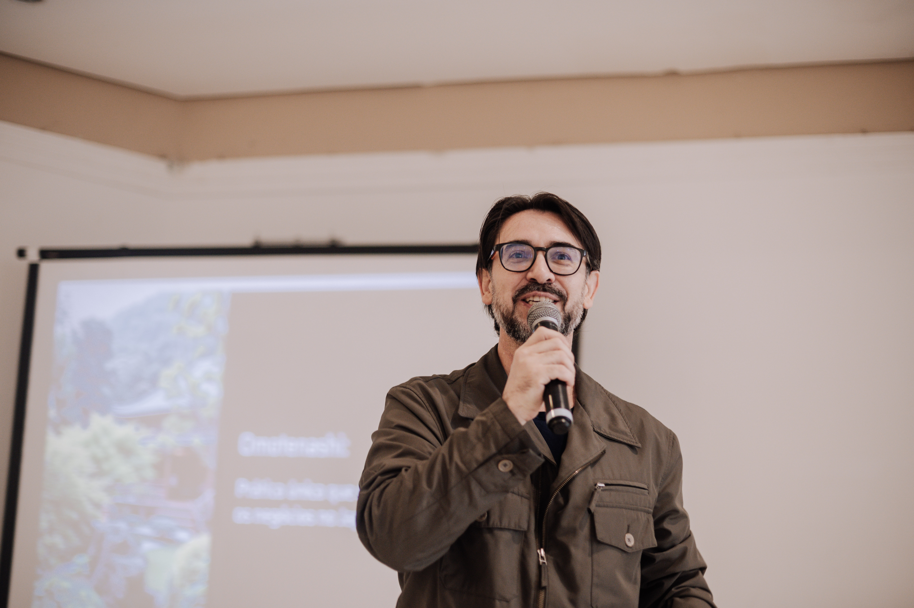
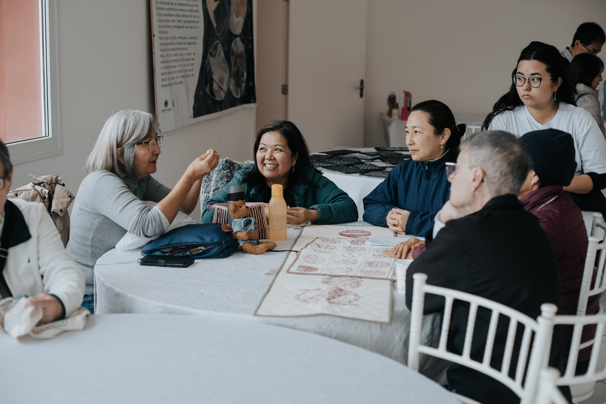
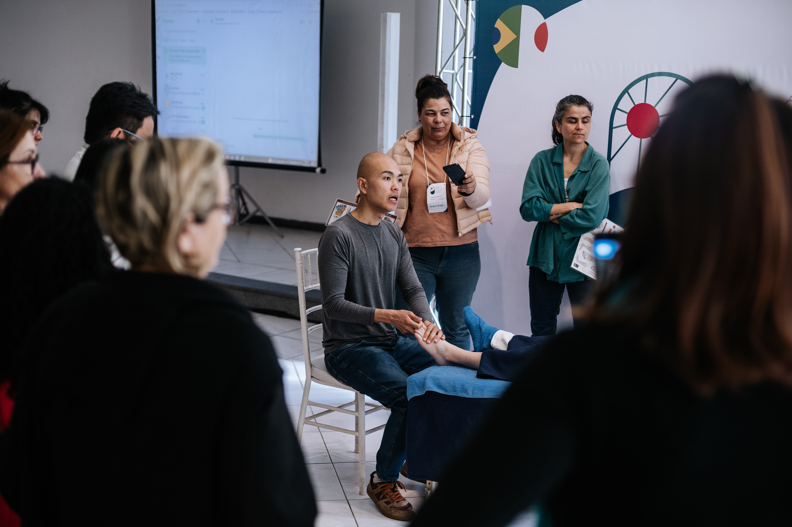
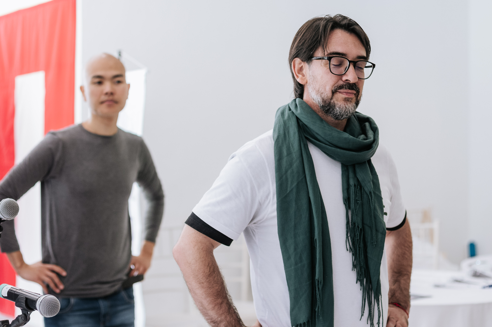
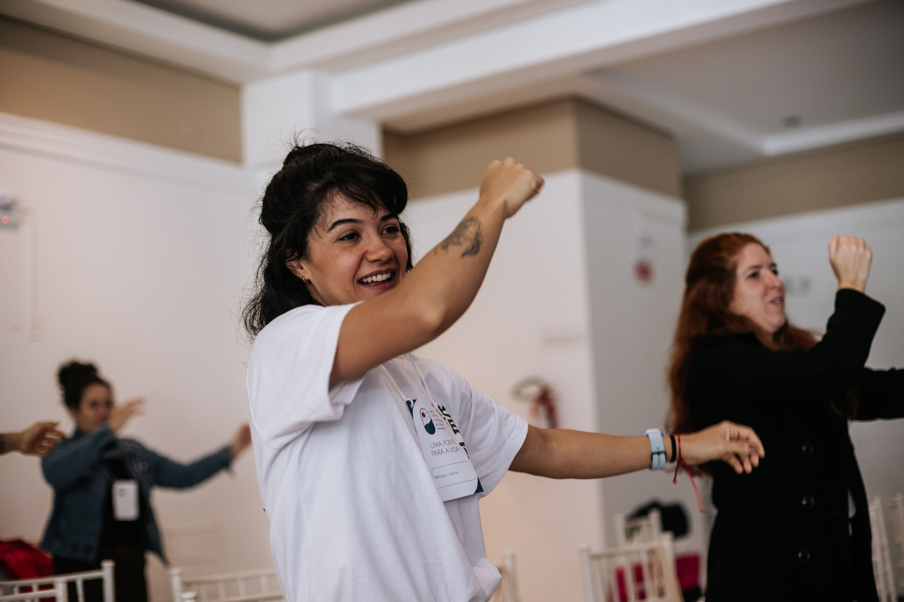
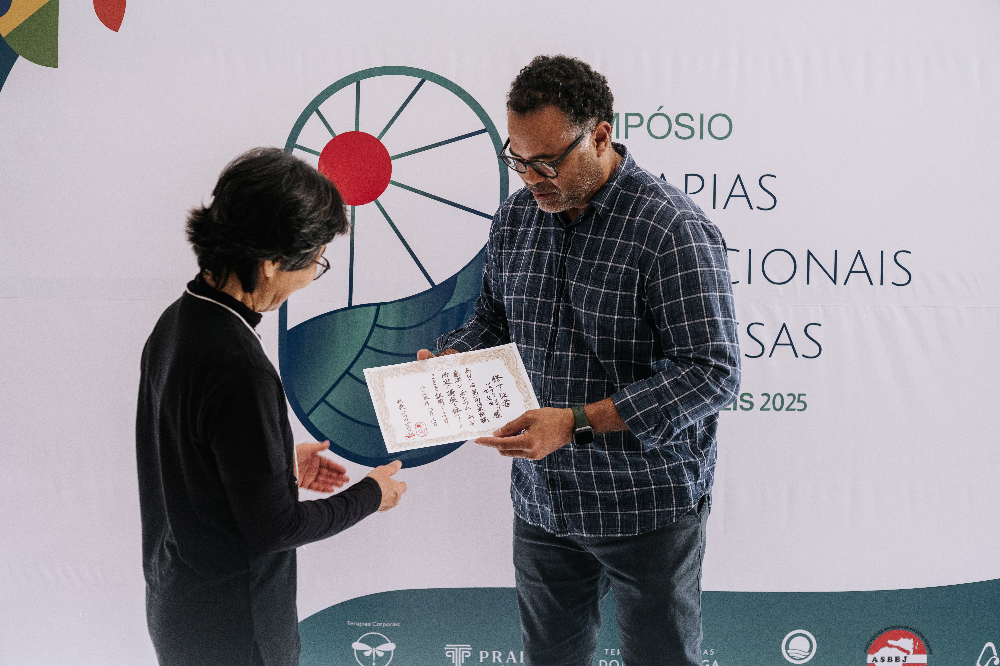
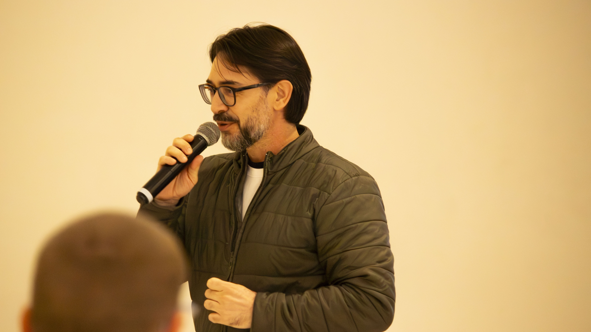

.JPG)
.JPG)




2ª Edição · 2026
Simpósio de Terapias
Tradicionais Japonesas
"Sem raízes profundas, o trabalho perde sua essência."






2ª Edição · 2026
"Sem raízes profundas, o trabalho perde sua essência."

Workshops, palestras e atividades culturais voltados ao aprimoramento profissional, à promoção da saúde e à valorização dos saberes tradicionais japoneses.
O 2º Simpósio de Terapias Tradicionais Japonesas é um encontro dedicado à integração entre ensino, desenvolvimento humano e os saberes da cultura japonesa aplicados ao cuidado em saúde.
Após o sucesso de sua primeira edição, o evento retorna em 2026 com uma programação ampliada e será realizado na Universidade Federal de Santa Catarina (UFSC), reunindo profissionais, estudantes e interessados em terapias tradicionais japonesas, práticas integrativas e cultura oriental.
O simpósio propõe um espaço de diálogo entre a filosofia japonesa e práticas terapêuticas que promovem equilíbrio, bem-estar e reconexão consigo mesmo, valorizando conhecimentos construídos ao longo de gerações.

O evento oferece uma oportunidade única para atualização profissional, troca de experiências e aprofundamento dos conhecimentos sobre terapias tradicionais japonesas.
.jpg)
Atividades
Temas abordados

Além das atividades acadêmicas e profissionais, o evento contará com um espaço dedicado à cultura japonesa, promovendo experiências culturais e artísticas.

Conheça o Idealizador
Paulo Pierin Luz é Professor de Educação Física pela Universidade Federal de Santa Catarina (UFSC), terapeuta corporal, aromaterapeuta e pesquisador das Terapias Tradicionais Japonesas. Atua profissionalmente com Shiatsu desde 2003, dedicando sua trajetória ao estudo, à prática clínica e ao ensino das artes terapêuticas orientais.
Sua formação reúne Shiatsu, Seitai, Ashitsubo (Terapia Podal Japonesa), Acupuntura, Moxaterapia Japonesa Ontake, Aromaterapia, Qi Gong, meditação e práticas corporais orientais, integrando tradição, ciência do movimento e cuidado integral da saúde. Também atuou como instrutor de Kenjutsu e Iaijutsu pelo Instituto Cultural Niten, experiência que reforçou sua vivência da filosofia, da disciplina e da cultura japonesa.
Desde 2012, ministra cursos, palestras e formações para terapeutas e profissionais da saúde, buscando preservar a essência das terapias tradicionais japonesas por meio de um ensino fundamentado na prática, no respeito às tradições e na constante atualização profissional.
Idealizou o Simpósio de Terapias Tradicionais Japonesas com o propósito de criar um espaço dedicado ao encontro entre mestres, terapeutas, pesquisadores e estudantes, promovendo o intercâmbio de conhecimentos, o fortalecimento das tradições japonesas e o desenvolvimento ético e técnico da área no Brasil.
Acredita que preservar uma tradição significa mantê-la viva por meio do estudo, da prática, da pesquisa e da transmissão responsável do conhecimento às novas gerações.
O simpósio é aberto à comunidade e destinado especialmente a profissionais e estudantes da área da saúde interessados em terapias tradicionais e práticas integrativas.
Não é necessário experiência prévia nas terapias tradicionais japonesas para participar.
@simposioterapiastradicionais
Fique por dentro das novidades, programação e bastidores do evento.
Seguir no InstagramData
18 e 19 de setembro
de 2026
Local
Auditório do CSS – Térreo
Universidade Federal de Santa Catarina
Florianópolis – SC
Participação
Gratuita
Aberto ao públicoPara mais informações sobre a programação, participação ou demais dúvidas relacionadas ao evento, entre em contato com a organização.
Entrar em contato